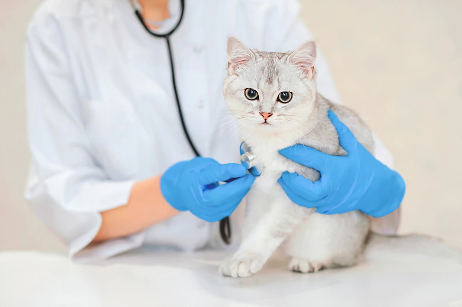
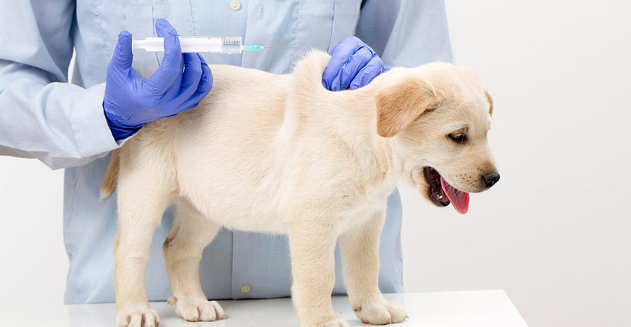

Nega ljubimaca

Saveti o ishrani i higijeni
Vakcinacija štenaca i odraslih pasa
Vakcinacija mačića i odraslih mačaka
Čipovanje pasa i mačaka
Zaštita od buva i krpelja
Sterilizacija i kastracija
Redovni godišnji preventivni pregledi
Čišćenje zubnog kamenca
Specijalistički pregledi

Kompletne laboratorijske analize
Digitalni rentgen
Ultrazvuk
Ortopedski pregled
Oftalmologija
Neurologija
Dermatologija
Otoscopija
Rinoskopija
Transfuzija
Terapija i praćenje toka bolesti
Hirurgija

Opšte hirurške procedure
Urgentne operacije
Vađenje stranih tela
Ortopedska hirurgija
Hirurgija mekih tkiva
Operacije tumora
Biopsija
Očna hirurgija
Dentalna hirurgija
Kardiološke intervencije
Intenzivna nega